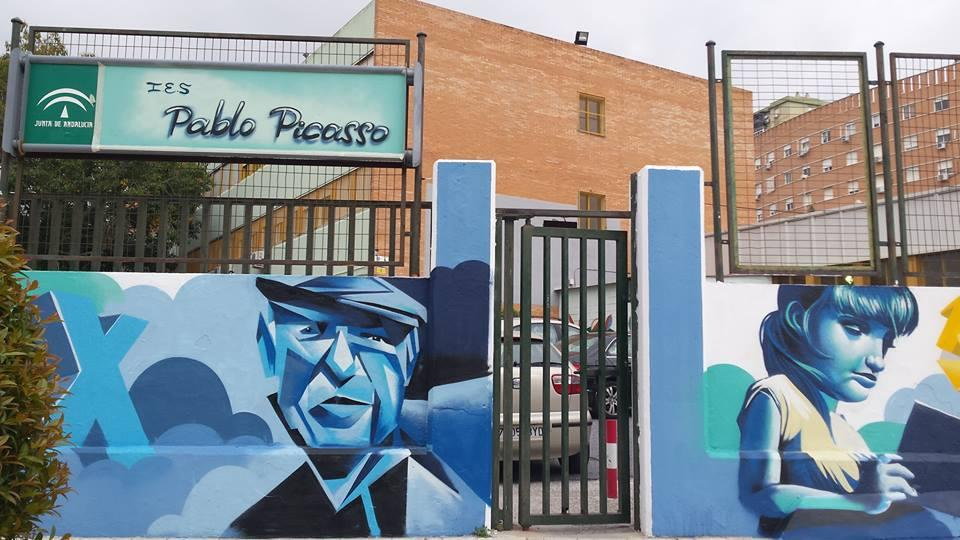

“Fundado en 1978, nuestro Centro, ligado profundamente a la historia del barrio de Nueva Málaga y sus gentes, ha dedicado décadas a la educación de agentes activos de nuestra sociedad, gracias a un equipo docente y una Comunidad Educativa comprometidos.
En la actualidad, el IES Pablo Picasso acoge en torno a 750 alumnos escolarizados desde 1º de Educación Secundaria Obligatoria hasta 2º de Bachillerato, además de los grupos de enseñanzas profesionales de Técnico en Sistemas Microinformáticos y Redes y de Técnico Superior de Desarrollo de Aplicaciones Multiplataforma, ambos en modalidades ordinaria y Dual.”
El periodo de vacaciones de navidad comenzará el 20 de diciembre hasta el 8 de enero